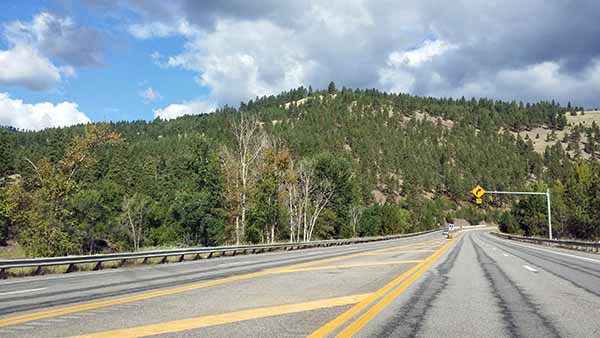
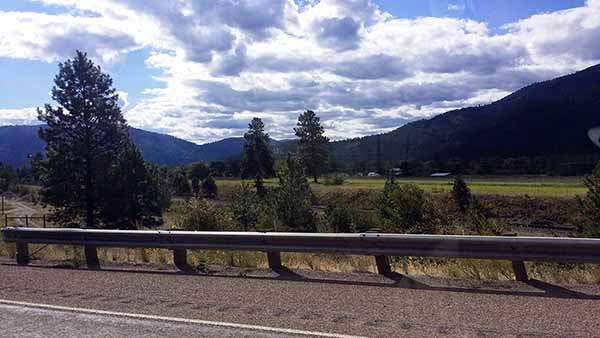
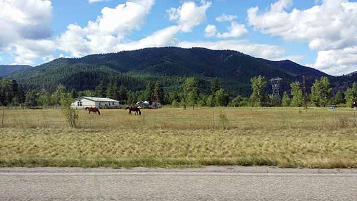
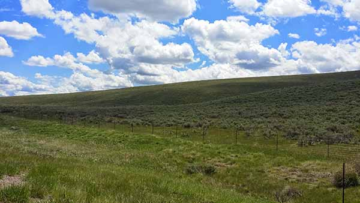
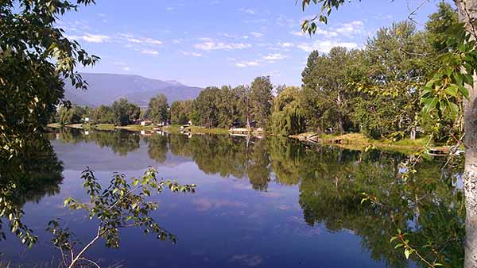
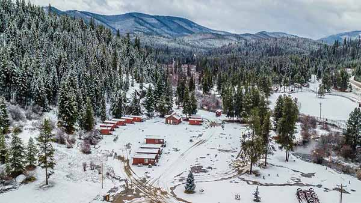

Mountain road north of Lolo.

High skies and ranches and trees near the south of Lolo.

A pasture near the road, backed by mountains and sky and open space.

A high sky in Provo. Hope you don't get tired of green and blue.

The gorgeous Haden Lake in the middle of Lolo's suburban area.

Lolo Hot Springs is a favorite all year, but espescially in winter.